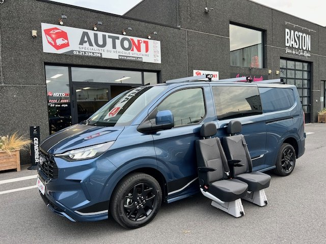
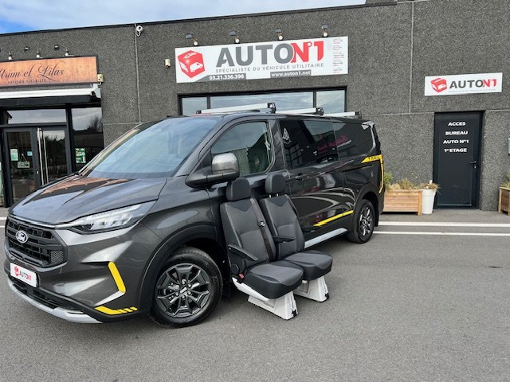
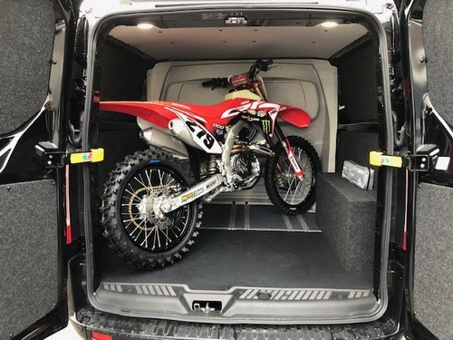
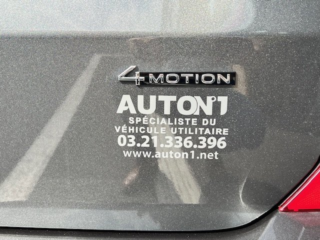
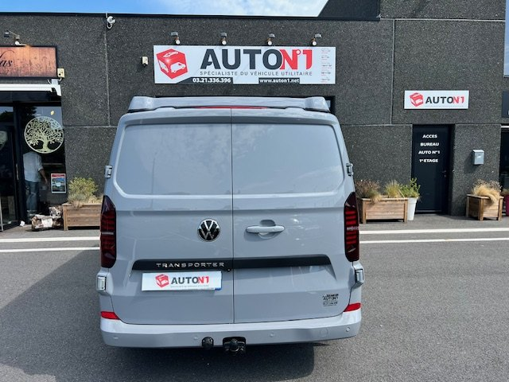
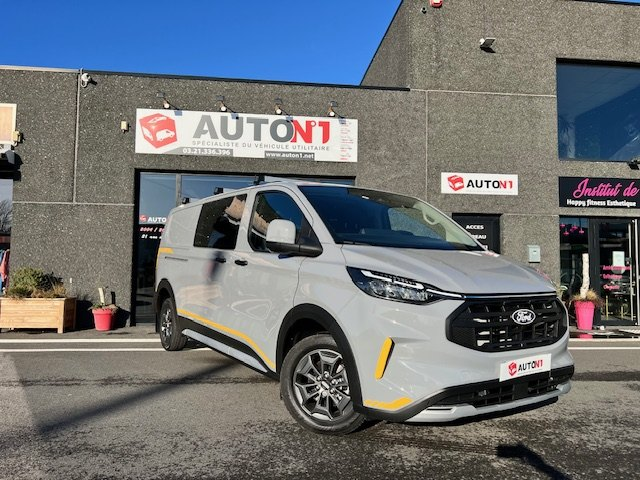

Transit Custom Trail
La version baroudeuse du Transit Custom : transmission intégrale intelligente disponible, protections de carrosserie, calandre spécifique et garde au sol relevée. Le plus polyvalent pour les métiers de terrain.
Chantiers boueux la semaine, chemins forestiers le dimanche. Transit Custom Trail, MS-RT et Transporter 4Motion : la motricité et l'image d'un tout-terrain, avec toute la modularité de nos aménagements.
La version baroudeuse du Transit Custom : transmission intégrale intelligente disponible, protections de carrosserie, calandre spécifique et garde au sol relevée. Le plus polyvalent pour les métiers de terrain.
L'édition sport développée avec MS-RT : kit carrosserie inspiré du rallye, jantes spécifiques, intérieur exclusif et motorisations puissantes. Pour les dirigeants qui veulent que leur utilitaire ait du caractère.
La transmission intégrale 4Motion de Volkswagen sur le nouveau Transporter : motricité en toutes conditions, finition allemande, compatible cabine SPECIPRO et toit relevable.
Le 4x4 n'est pas un gadget pour nos clients : c'est la garantie d'arriver sur le chantier, le terrain agricole ou le spot du dimanche, quelle que soit la météo de la Côte d'Opale.

Remorque chargée, terrain meuble : la transmission intégrale fait la différence entre une journée de travail et une journée perdue.
Je ne demande plus au client si l'accès est goudronné.

Un véhicule qui porte l'image de l'entreprise, capable d'aller au bout de la piste avec cinq personnes à bord et le matériel de mesure.
Mes chefs d'équipe se le disputent. C'est bon signe.

La moto à l'arrière, le 4x4 pour rejoindre le départ, la cabine SPECIPRO pour ramener les copains. Un seul véhicule pour toutes les vies.
Le fourgon travaille cinq jours et s'amuse deux.



Transmission intégrale intelligente ou permanente selon la version : boue, neige, gravier, pente.
Les versions 4x4 reçoivent la cabine approfondie 2 à 7 places, la cloison R1, la table et les rails d'arrimage.
Protections, jantes spécifiques, kit carrosserie MS-RT : votre véhicule est aussi votre carte de visite.
Un 4x4 aménagé reste un véhicule utilitaire : carte grise CTTE, TVA récupérable, financement professionnel.
Trail, MS-RT ou 4Motion ? Décrivez vos terrains et vos usages : nous vous proposons la version, l'aménagement et le financement adaptés.